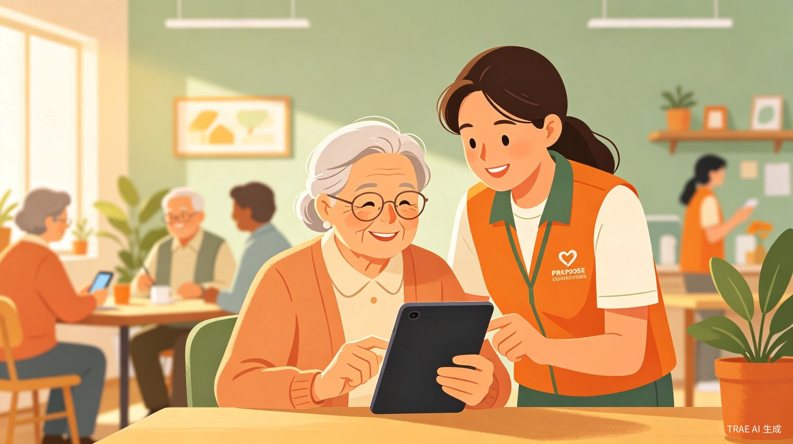
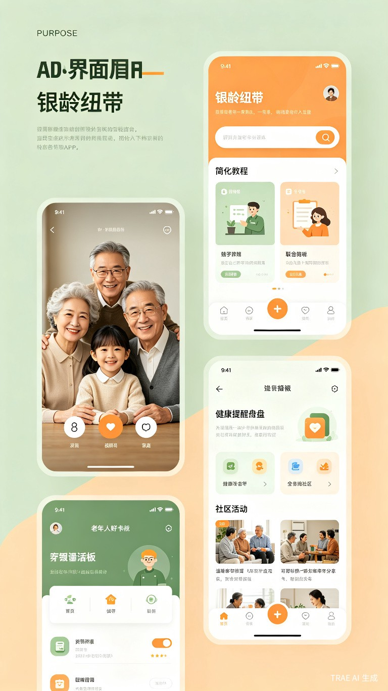

银龄纽带是一个连接老年人与年轻志愿者的数字融入互助平台，通过一对一陪伴教学、简化版智能工具和社区互助网络，帮助老年人跨越数字鸿沟，享受科技带来的便利。
在数字化快速发展的今天，老年人面临严重的"数字鸿沟"——不会扫码支付、不会网上挂号、不会视频通话、不会使用出行软件，日常生活中处处碰壁，甚至产生被社会抛弃的孤独感。
我的奶奶今年 78 岁，因为不会用智能手机，疫情期间无法出示健康码，连续 3 天没能出门买菜。后来我教她视频通话，她第一次在手机里看到远方的表妹，激动得眼眶都红了。这让我深刻意识到，科技不应该是老年人的壁垒，而应该是连接他们与世界的桥梁。
一个微信小程序平台，包含志愿者匹配系统、长辈版简化界面、AI 语音助手、社区互助圈四大模块，构建老年人数字融入的全方位支持网络。
60 岁以上、对智能设备使用存在困难的老年人，以及希望为长辈提供帮助的子女家属。同时面向有公益热情的年轻志愿者，包括大学生、退休教师、社区工作者等。
老人不会网上预约，志愿者远程协助或陪同操作
一键发起视频通话，让老人随时见到远方的亲人
simplified 打车界面，语音输入目的地，自动定位
发现附近的老年大学、健康讲座、兴趣小组

产品界面概念设计
基于地理位置和兴趣匹配，年轻人与老人结对，定期上门或远程教学
超大字体、高对比度、语音交互，将复杂操作简化为"一键直达"
实时识别可疑电话、短信和链接，自动预警并通知家属
同社区老人互相交流、组队学习，形成可持续的互助氛围
缩小代际数字鸿沟，促进社会公平，让每一位老人都能享受数字化红利
将老人学习使用新功能的时间从平均 2 周缩短至 2 小时，大幅降低学习成本
重建老人的社会连接感和自信心，减少孤独感，提升晚年生活质量
采用无障碍优先的设计理念，技术栈兼顾易用性与安全性：
建立"时间银行"机制，志愿者服务时长可兑换为老人所需的实物福利或未来自己/家人的优先服务权，形成互助闭环。
与社区居委会、老年大学、医疗机构合作，将平台嵌入现有服务体系，降低推广成本，提升服务覆盖面。
匿名化的老年人数字行为数据向学术机构开放，助力老龄化社会研究，反哺政策制定。